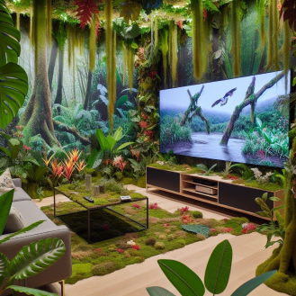
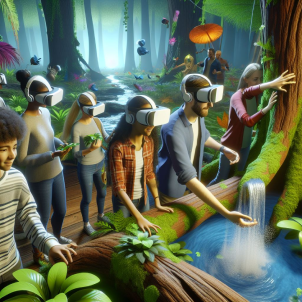
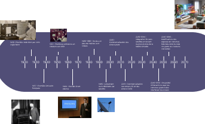

Future Television

Immersive Television: Dive into Your Favorite Shows
A simple press of the remote control can transform your living room into a vast tropical forest, a scorching desert, or even the inside of a space station. You won't just watch a documentary or a movie anymore: you will be fully immersed in it. You will be able to touch, feel, and experience it as if you were actually there.
A Total Sensory Experience
Immersive Television uses cutting-edge technologies to physically alter the environment of your room based on the content being broadcast. Imagine watching a documentary about the Amazon rainforest: your living room instantly transforms into a lush jungle. The walls disappear behind dense vegetation, and the floor is covered with leaves and moss.

Tactile and Sensory Interaction
What truly sets this technology apart is its tactile aspect. You can touch and interact with the elements of the virtual environment as if they were real. Feel the rough bark of a tree, the texture of a leaf, or immerse your hands in a virtual stream.

Effect felt during this futuristic television experience
Beyond Passive Watching
Immersive Television turns passive watching into an active and engaging experience. Whether you're watching an action movie, a sports event, or an educational show, you find yourself at the center of the action, fully participating in the experience rather than simply observing it.

The Possibilities Are Endless
- Travel the world without leaving your living room
- Attend concerts as if you were on stage
- Explore historical sites recreated with incredible accuracy
- Participate in interactive fitness classes in various settings

The Future of Home Entertainment
Immersive Television represents the future of home entertainment. It blends the boundaries between real and virtual, offering a viewing experience that stimulates all senses. It's more than just a technological evolution; it's a revolution in how we consume media and interact with content.

As we move toward a future where augmented reality becomes an integral part of our daily lives, Immersive Television positions itself as the missing link between our physical world and the infinite virtual universes waiting to be explored.
Here is a timeline for the evolution of television
